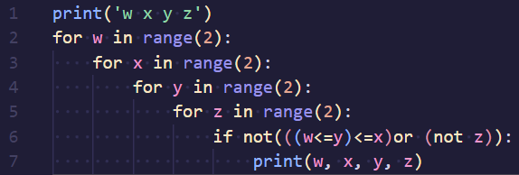

Логические операции:
Алгоритм решения:
1. Строим свою таблицу истинности при помощи языка программирования Python, вызываем функцию print и прописываем название столбцов по условию
2. Запускаем цикл for, который будет перебирать значение переменной. Так как в таблице могут быть только нули и единицы, пепебирать придется только 2 числа
3.Проделываем тоже самое с другими переменными, самое главное не забывать про отступы перед циклами, так как они в цикле.
4. Мы прописываем данное нам условие через if, для начала можете использовать таблицу выше, чтобы заменить логические знаки на знаки программирования.
5. Выводим переменные через print в том порядке как они шли в циклах.
6. Получается таблица и ее значения мы соотносим с таблицей в условии.
7. Пишем ответ.
Пример из ДЕМО-2025:
1.Прописываем код:

2.У нас получилась таблица
3. В столбике z могут быть только 1, поэтому нам подходит только первый столбик. Первая буква - z.
4. В столбике x могут быть только нули, поэтому х будет в последнем столбике. Последняя буква x.
5. Так как функция равна нулю, то скобка с лвумя импликациями должна быть равна 0, так как not z всегда будет равен нулю. Первая импликация должна быть равна 1, так как импликация равна нулю только, когда 1 следует в 0. Получается по таблице в третий стообик подходит w. Третья буква - w.
6. Оставшийся столбик является y. Вторая буква - y.
7. Ответ: zywx
Для лучшего усвоения материала можете поробовать решить данную задачу: